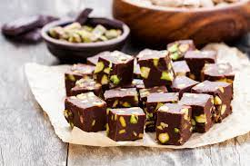
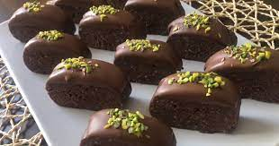
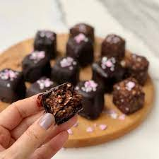

Çikolata Küpleri



Antep Fıstıklı Çikolata Küpleri Tarifi İçin Malzemeler
- 30
gram
çikolata kreması
(2 yemek kaşığı)
- 1
su bardağı
bitter çikolata
(doğranmış)
- 1/2
su bardağı
sütlü çikolata
(doğranmış)
- 1/2
su bardağı
Antep fıstığı
- 1
yemek kaşığı
toz Antep fıstığı
Antep Fıstıklı Çikolata Küpleri Tarifinin Püf Noktası
Çikolatayı eritirken tahta kaşık dışında karıştırma aparatı kullanmamalısınız. Çikolatanın yapısı oldukça hassas olduğundan kimyasal yapının bozulmasına neden olabilir.
Antep Fıstıklı Çikolata Küpleri Nasıl Yapılır?
- Bitter çikolatayı benmari usulü eritin.
- Erittiğiniz çikolatayı ocaktan alın ve erittiğiniz kabın altını temiz bir bezle kurulayın.
- Sütlü çikolatayı erimiş bitter çikolatanın içinde eritin ve çikolata kremasını da ekleyip karıştırın.
- Çikolatalar birbirine karışınca, Antep fıstıklarını ilave edin ve tahta kaşık yardımıyla karıştırmaya devam edin.
- Cam borcam veya dikdörtgen kalıbın içine yağlı kağıt serin ve hazırladığınız çikolatayı kaba yayın.
- Bu aşamada kullanacağınız kabın büyüklüğü çikolata küplerini hangi ebatta yapmak istediğinize göre değişebilir.
- 18 cm'lik baton kek kalıbını tercih ederseniz bu tarif için görseldeki büyüklükte küpler elde edebilirsiniz.
Çikolatayı oda sıcaklığında 15-20 dakika beklettikten sonra, buzdolabında 2-3 saat bekletin.
- İyice donan çikolata barını yağlı kağıttan tutarak kesme tahtasının üzerinde dilediğiniz büyüklükte dilimleyin. İşte bu kadar. Afiyet olsun!
Antep Fıstıklı Çikolata Küpleri Tarifinin Servis Önerisi
Dilerseniz üzerine kakao eleyerek servis edebilirsiniz.